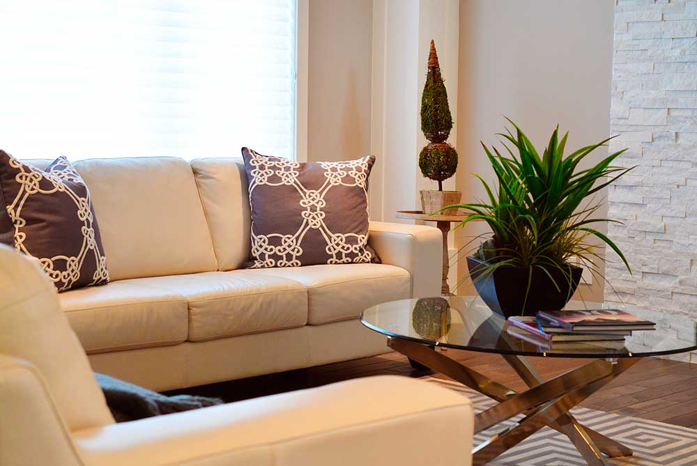

Guía de Colores para el Hogar
Elegir la paleta correcta para cada ambiente puede transformar completamente la sensación de un espacio. Los tonos neutros aportan calma, mientras que los colores vibrantes dan vida y energía a cualquier rincón.
En esta guía te mostramos cómo combinar colores con los acabados de tus muebles para lograr una decoración coherente, moderna y que refleje tu personalidad.